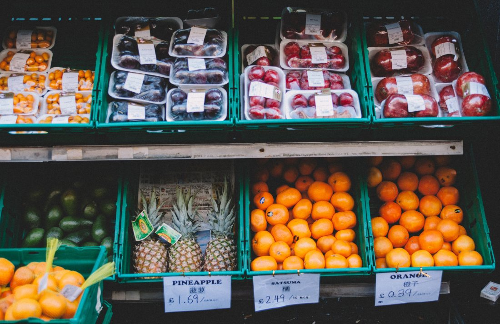
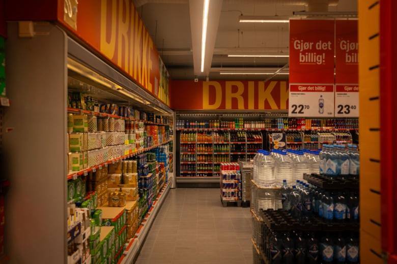
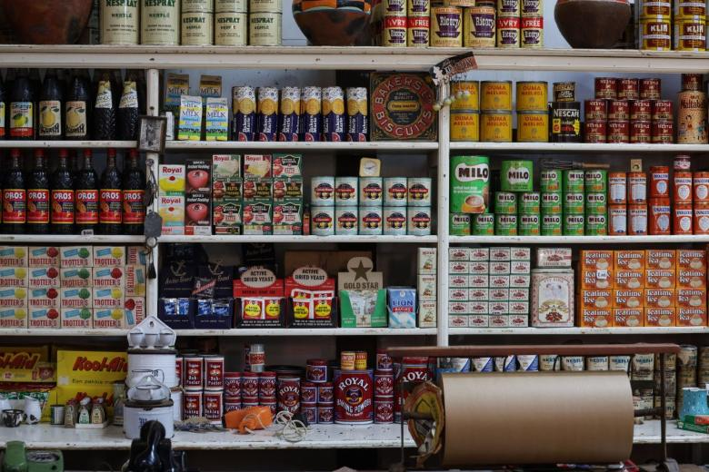
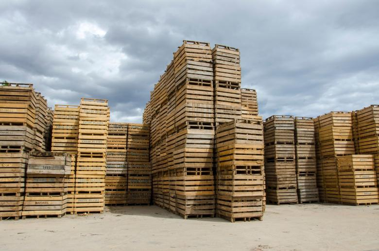

01
El envase tiene valor
La botella retornable no se regala con el contenido: se presta contra un valor. Por eso al comprar sin devolver, el precio sube — no es un recargo, es el envase.
Propuesta de sitio web — preparada para Matekila por CristalWeb
Revisado el 31-08-2026: matekila.cl está en línea y hasta tiene carrito, pero el título de la página es «Inicio» — así aparece en Google, sin el nombre del negocio — y en el menú (Inicio · Productos · Nuestra historia · Contacto) no hay nada del lado mayorista. La mitad del negocio no está contada.
Distribuidora y botillería · Loncoche
Por un lado, el almacén del sector que compra por jaba y necesita que le dejen el pedido. Por el otro, el vecino que viene por una cosa. Es el mismo mesón y son dos clientes distintos — y hoy no hay dónde leer cómo funciona ninguno de los dos.
Al por mayor y al detalle
Lo de abajo es cómo funciona una distribuidora con botillería en general. Los mínimos, el reparto y los días de pedido son justamente lo que hay que confirmar, y van marcados: en logística, publicar una condición que después no se cumple es peor que no publicar nada.
Mostrador uno
Para el almacén del sector, el negocio de barrio, la parcela que atiende, el local de comida.
Estas seis respuestas son la página entera para un almacenero. Con ellas escritas, el pedido llega por mensaje y no por tres llamadas.
Mostrador dos
Para el vecino que viene al local.
Acá el trabajo de la página es más simple: que el horario y la dirección estén escritos y actualizados. Es lo que la gente busca en el teléfono antes de salir de la casa.
La gracia de esta demo es el lado mayorista. Un almacén no elige proveedor por precio solamente: elige por el que cumple el día de entrega — y ése es un dato que se puede publicar.
Lo que separa al almacenero del vecino
Son dos negocios distintos en el mismo local, y hoy la página no distingue ninguno: el almacenero necesita precio por jaba, día de reparto y condiciones de envase; el vecino necesita saber hasta qué hora abren. Poner los dos mostradores por separado no complica el sitio — es lo único que lo hace servir para las dos personas.
El sistema que todo el sur conoce
El retornable y la jaba prestada funcionan por costumbre y casi nunca están escritos. Es la fuente número uno de malentendidos entre una distribuidora y un negocio nuevo.
01
La botella retornable no se regala con el contenido: se presta contra un valor. Por eso al comprar sin devolver, el precio sube — no es un recargo, es el envase.
02
La jaba plástica es del distribuidor y va y vuelve con el pedido. Un negocio que acumula jabas termina con un problema en la cuenta, y casi siempre sin saberlo.
03
Envases completos, en su jaba, sin botellas trizadas ni de otra marca mezcladas. Suena obvio y es exactamente lo que genera discusiones en la entrega.
04
Cuántas jabas salieron y cuántas volvieron. Cuando eso está anotado por las dos partes, no hay discusión posible.
falta: cómo lo llevan ustedes — libreta, planilla, boleta
Esta página trata del funcionamiento del negocio: reparto, jabas, pedidos y envase retornable. No promociona el consumo de alcohol, no publica precios de bebidas alcohólicas ni ofertas, y no está dirigida a menores de edad. La venta de alcohol tiene reglas de horario y de edad que fija la ley y que aplica el local; nada de lo escrito acá las reemplaza ni las interpreta.
La jaba que vuelve
El envase retornable, explicado antes de la primera compra
Para pedidos y consultas
Es el número publicado en su ficha de Google.

Estas seis ya aparecen más arriba en la página. Vuelven acá en otro tamaño porque una sola pasada de imágenes deja el scroll vacío, y porque de cerca se ven cosas que en grande se pierden. La procedencia de cada una está en imagenes/FUENTES.txt.



Las 36 reseñas de su ficha de Google, el teléfono (45) 247 1463, y que matekila.cl funciona pero se titula «Inicio» y no menciona el lado mayorista. Revisado el 31-08-2026.
Los dos mostradores y los cuatro pasos del envase. Describen cómo funciona el rubro, no cómo funcionan ustedes.
Seis respuestas del lado mayorista —mínimo, reparto, sectores, día tope, día de entrega y si hay lista para negocios— más el horario y la dirección. Las seis primeras son las que hacen que un almacén cambie de proveedor.